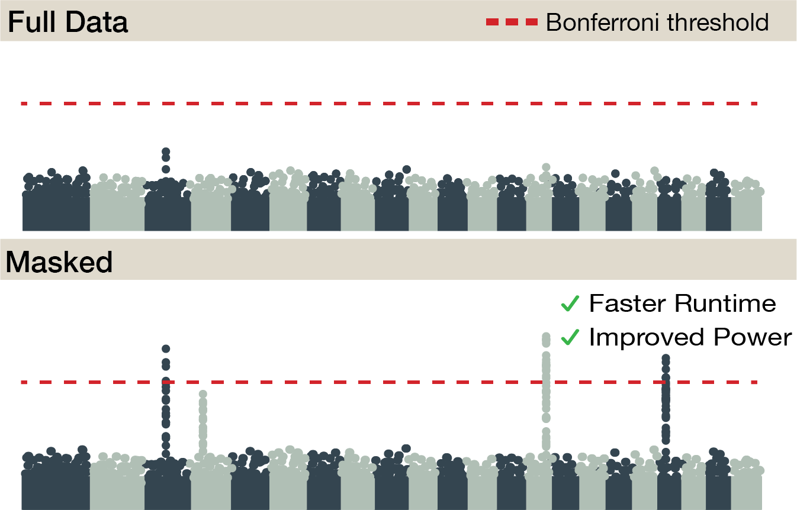
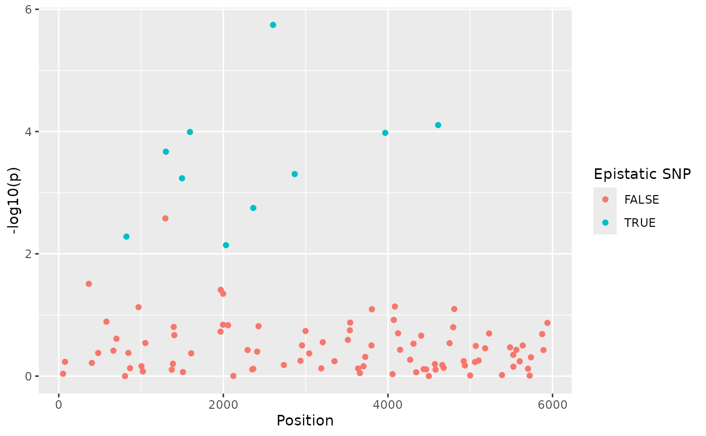
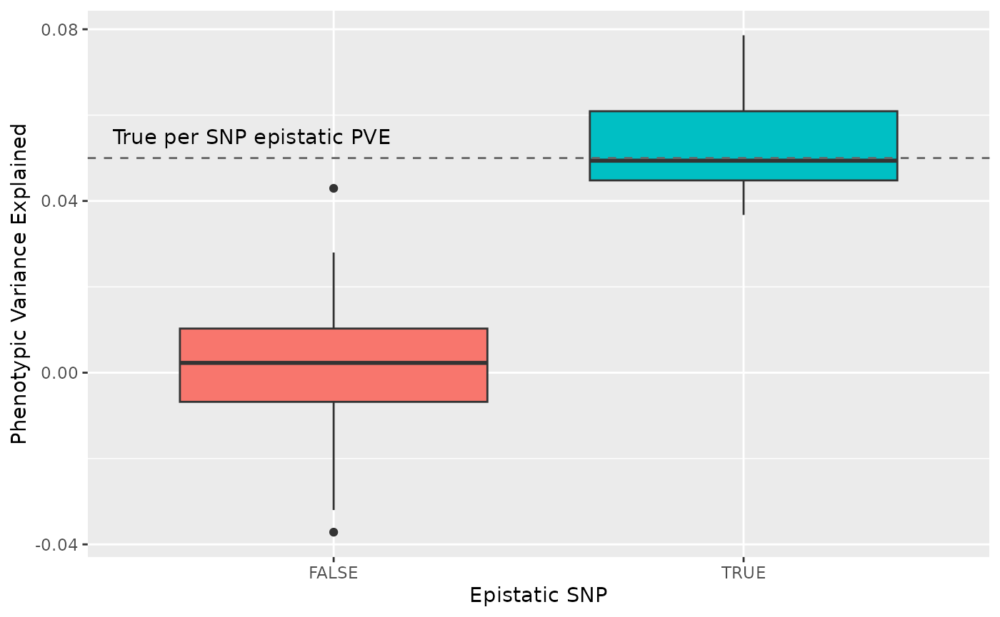
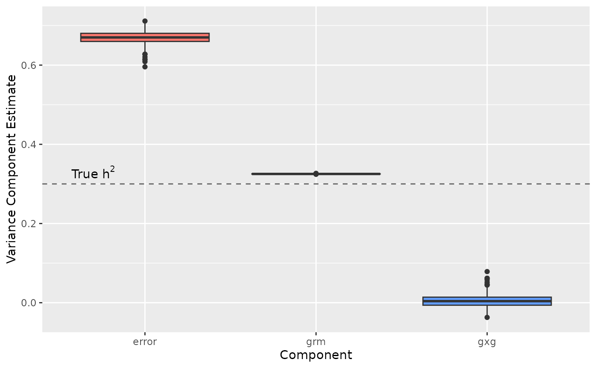

The sparse marginal epistasis (SME) test performs a genome-wide search for SNPs involved in genetic interactions while conditioning on information derived from functional genomic data.
By examining one SNP at a time, SME fits a linear mixed model to test for marginal epistasis. It explicitly models the combined additive effects from all SNPs a marginal epistatic effect that represents pairwise interactions involving a test SNP.
The key to the SME formulation is that the interaction between the test SNP and other SNPs may be masked depending on additional information. Masking interactions that do not contribute to trait variance both maximizes the power of the inference as well as realizes the computational efficiency needed to analyze human Biobank scale data.
This pages presents a toy example to show case what insights the implementation of the test provides.
Figure 1. SME performs a genome-wide search for SNPs involved in genetic interactions while conditioning on information derived from functional genomic data. SME has improved power to detect marginal epistasis and runs 10x to 90x faster than state-of-the-art methods.
Run SME with PLINK data
Data Requirements and File Formats
SME is implemented in R and requires your genetic data to be in PLINK format, which consists of three files:
-
.bim: Contains SNP information -
.bed: Contains genetic data -
.fam: Contains sample information
Note: sme() cannot handle missing
genotypes. Prior to running sme(), use PLINK to remove
variants with missing genotypes or impute them.
Additionally, your phenotype (trait) data should be in a separate file following PLINK’s phenotype format.
The sme() function includes parameters that let you
control memory usage and computational resources. For detailed guidance
on optimizing these settings for your system, please see our tutorial How
To Optimize the Memory Requirements of SME.
Specifying SNPs for Analysis
When selecting which SNPs to analyze, you must provide their
positions as 1-based indices. These indices correspond
to the row numbers in your .bim file, where the first SNP
is index 1, the second is index 2, and so on.
For complete details about all function parameters, please refer to
the documentation of the sme() function.
# File inputs
plink_file <- "path/to/plink/file"
pheno_file <- "path/to/pheno/file"
mask_file <- "path/to/mask/file"
# Parameter inputs
chun_ksize <- 10
n_randvecs <- 10
n_blocks <- 10
n_threads <- 5
# 1-based Indices of SNPs to be analyzed
n_snps <- 100
snp_indices <- 1:n_snps
sme_result <- sme(
plink_file,
pheno_file,
mask_file,
snp_indices,
chunk_size,
n_randvecs,
n_blocks,
n_threads
)This analysis uses simulated data for demonstration purposes. We simulated synthetic phenotypes from 5000 synthetic genotypes with 6000 SNPs. If you would like to learn how to simulate data, please refer to our tutorial How To Simulate Traits.
Understanding the Results
When you call the sme() function, it returns a list
containing multiple elements. The most important one is called
summary, which contains the main analysis results. These
results are formatted as tidy data, making them compatible with popular
R packages like ggplot2 and dplyr for further
analysis and visualization.
Visualizing Genomic Associations
We use Manhattan plots to visualize genome-wide analyses because they effectively highlight strong associations between genetic variants and traits. In this case, the Manhattan plot specifically shows statistical epistasis (interactions between genes). For reference, we’ve marked the true causal SNPs (Single Nucleotide Polymorphisms) in green on the plot - these are the genetic variants we included in our simulation as having real effects.
sme_result$summary %>%
ggplot(aes(
x = index,
y = -log10(p),
color = true_gxg_snp
)) +
geom_point() +
xlab("Position") +
labs(color = "Epistatic SNP")
Understanding Variance Components and Effect Sizes
SME estimates how much of the total trait variation can be explained by genetic interactions. In this simulation, we set the Phenotypic Variance Explained (PVE) to 5% for each SNP involved in epistatic interactions.
The plot below shows how well our method recovered these effects. It displays two distributions:
- The estimated PVE for SNPs we know are truly involved in epistatic interactions
- The estimated PVE for SNPs that have no real epistatic effects
The dashed line marks the true 5% PVE level we used in the simulation, allowing you to see how accurately the method estimated the actual effect sizes.
sme_result$summary %>%
ggplot(aes(x = true_gxg_snp, y = pve, fill = true_gxg_snp)) +
geom_boxplot() +
geom_hline(yintercept = 0.05, color = "grey40", linetype = "dashed") +
annotate("text", x = 0.8, y = 0.055,
label = "True per SNP epistatic PVE", color = "black") +
xlab("Epistatic SNP") +
ylab("Phenotypic Variance Explained") +
theme(legend.position = "none")
Narrow Sense Heritability Estimates
The SME method uses a linear mixed model to separate different sources of trait variation. One key component it estimates is narrow sense heritability (), which measures how much trait variation can be explained by additive genetic effects.
The plot below breaks down the estimated sources of trait variation:
- “grm”: Shows narrow sense heritability ()
- “gxg”: Shows variance due to gene-by-gene interactions
- “error”: Shows unexplained variance, such as environmental effects
In our simulation, we set the true narrow sense heritability to 30%, shown as a dashed line in the plot. This reference line helps you evaluate how accurately SME estimated the genetic components of trait variation.
sme_result$vc_estimate %>%
ggplot(aes(x = component, y = vc_estimate, fill = component)) +
geom_boxplot() +
geom_hline(yintercept = 0.3, color = "grey40", linetype = "dashed") +
annotate("text", x = 0.7, y = 0.33,
label = expression("True " * h^2), color = "black") +
xlab("Component") +
ylab("Variance Component Estimate") +
theme(legend.position = "none")
The estimate of the narrow-sense heritability is much less variable because it is always informed by the same genetic relatedness matrix. In this small data example it overestimates the heritability but it is unbiased in general.
SessionInfo
sessionInfo()
#> R version 4.4.2 (2024-10-31)
#> Platform: x86_64-pc-linux-gnu
#> Running under: Ubuntu 24.04.1 LTS
#>
#> Matrix products: default
#> BLAS: /usr/lib/x86_64-linux-gnu/openblas-pthread/libblas.so.3
#> LAPACK: /usr/lib/x86_64-linux-gnu/openblas-pthread/libopenblasp-r0.3.26.so; LAPACK version 3.12.0
#>
#> locale:
#> [1] LC_CTYPE=C.UTF-8 LC_NUMERIC=C LC_TIME=C.UTF-8
#> [4] LC_COLLATE=C.UTF-8 LC_MONETARY=C.UTF-8 LC_MESSAGES=C.UTF-8
#> [7] LC_PAPER=C.UTF-8 LC_NAME=C LC_ADDRESS=C
#> [10] LC_TELEPHONE=C LC_MEASUREMENT=C.UTF-8 LC_IDENTIFICATION=C
#>
#> time zone: UTC
#> tzcode source: system (glibc)
#>
#> attached base packages:
#> [1] stats graphics grDevices utils datasets methods base
#>
#> other attached packages:
#> [1] ggplot2_3.5.1 dplyr_1.1.4 smer_0.0.1
#>
#> loaded via a namespace (and not attached):
#> [1] gtable_0.3.6 jsonlite_1.8.9 compiler_4.4.2
#> [4] tidyselect_1.2.1 Rcpp_1.0.14 FMStable_0.1-4
#> [7] parallel_4.4.2 tidyr_1.3.1 jquerylib_0.1.4
#> [10] scales_1.3.0 systemfonts_1.1.0 textshaping_0.4.1
#> [13] harmonicmeanp_3.0.1 yaml_2.3.10 fastmap_1.2.0
#> [16] R6_2.5.1 labeling_0.4.3 generics_0.1.3
#> [19] knitr_1.49 genio_1.1.2 iterators_1.0.14
#> [22] backports_1.5.0 checkmate_2.3.2 tibble_3.2.1
#> [25] desc_1.4.3 munsell_0.5.1 bslib_0.8.0
#> [28] pillar_1.10.1 rlang_1.1.4 cachem_1.1.0
#> [31] xfun_0.50 fs_1.6.5 sass_0.4.9
#> [34] cli_3.6.3 withr_3.0.2 pkgdown_2.1.1
#> [37] magrittr_2.0.3 grid_4.4.2 digest_0.6.37
#> [40] mvMAPIT_2.0.3 foreach_1.5.2 mvtnorm_1.3-3
#> [43] lifecycle_1.0.4 CompQuadForm_1.4.3 vctrs_0.6.5
#> [46] evaluate_1.0.3 glue_1.8.0 farver_2.1.2
#> [49] codetools_0.2-20 ragg_1.3.3 colorspace_2.1-1
#> [52] purrr_1.0.2 rmarkdown_2.29 tools_4.4.2
#> [55] pkgconfig_2.0.3 htmltools_0.5.8.1